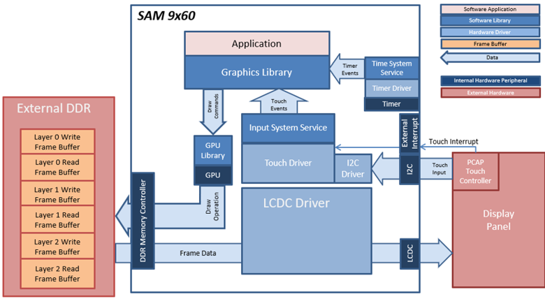
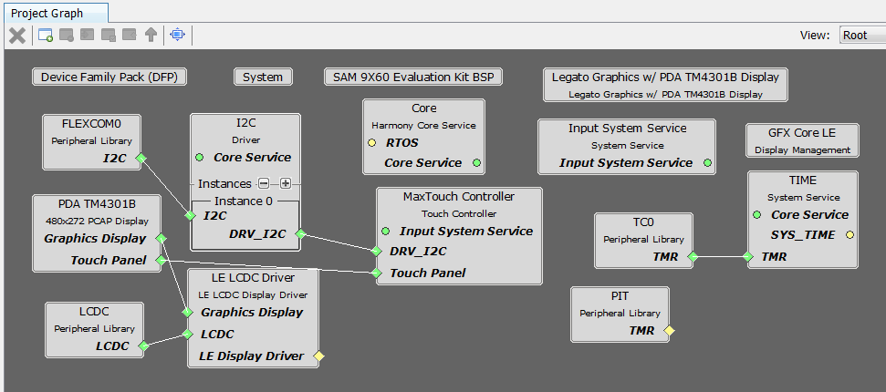
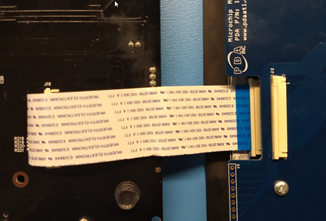
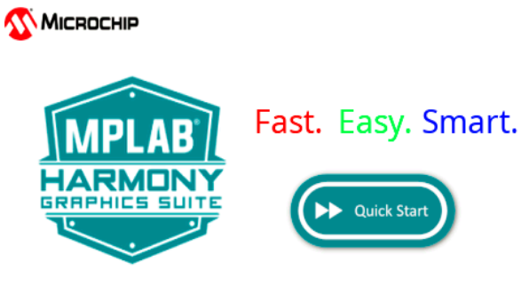

|
MPLAB® Harmony Graphics Suite
|
|
MPLAB® Harmony Graphics Suite
|

The project uses a draw surface widget as a container to draw the gauge needle using lines. When the user touches the screen, a touch event is sent to the application. The application updates the values of the tachometer, speedometer and fuel gauge. The needle is cleared and redrawn every time the tachometer value changes. The speed, distance and fuel gauge are also updated. Label widgets are used to show the speed and distance, while image widgets are used to show the indicators and fuel gauge.

The Project Graph diagram shows the Harmony components that are included in this application. Lines between components are drawn to satisfy components that depend on a capability that another component provides.
Adding the SAM 9x60 Evaluation Kit BSP and Aria Graphics w/ PDA TM4301b Display Graphics Template component into the project graph will automatically add the components needed for a graphics project and resolve their dependencies. It will also configure the pins needed to drive the external peripherals like the display and the touch controller
The parent directory for this application is gfx/apps/aria_dashboard. To build this application, open the IAR project at: gfx/apps/aria_dashboard/firmware/aria_db_9x60_ek_tm5000.eww. Once IAR is launched simply build the application to produce the harmony.bin image. Copy harmony.bin to a FAT32-formatted SD card. The SD card must also contain the supplied bootloader binary needed to boot Harmony applications. Insert the card to the SDMMC1 port on the board
The SAM 9x60 build environment is similar to SAMA592. For more building information, see: Getting started with Harmony 3 on the SAMA5D2.
The following table lists configuration properties:
| Project Name | BSP Used | Graphics Template Used | Description |
|---|---|---|---|
| legato_qs_9x60_ek_tm5000.X | SAM 9X60 Evaluation Kit | Legato Graphics w/ PDA TM5000 Display | SAM 9X60 Evaluation Kit and PDA TM5000 (5-inch) or TM7000 WVGA (7-inch) Display |
The build will generate a binary file harmony.bin. Copy harmony.bin to a FAT32-formatted SD card. The SD card must also contain the supplied bootloader binary needed to boot Harmony applications. Insert the card to the SDMMC1 port on the SAM A5D2 Xplained Ultra board.
**_NOTE:_** This application may contain custom code that is marked by the comments // START OF CUSTOM CODE ... and // END OF CUSTOM CODE. When using the MPLAB Harmony Configurator to regenerate the application code, use the "ALL" merging strategy and do not remove or replace the custom code.
The final hardware set-up should be:
Connect the ribbon cable from the display to the J16 connector on the back of the SAM 9x60 Evaluation Kit board.

When power-on is successful, the demonstration will display a similar menu to that shown in the following figure (different configurations may have slight variation in the screen aspect ratio):

When Make changes. Generate. Run. is touched, the button will toggle with each individual touch.

 1.8.18
1.8.18